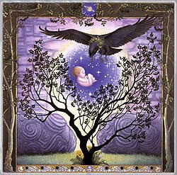

|

Mes: Noviembre-Diciembre
Signo: Sagitario
Hierba lunar: Malta
Animal: Lechuza
Color: Blanco, rojo y verde.
Diosa: Diana
Nombres: Luna de Ruis (sauco) para los celtas, Luna Azul o de Acebo para los Apalaches, Luna del Sueño para los nativos americanos del nordeste, Luna de Roble o Luna de las Largas Noches para los wiccanos.
La noche es la reina y el frío nos empuja a la intimidad del hogar para descansar y fortalecernos. Pero pronto el día se equilibrará con la noche y volveremos a sentirnos vivos a pesar de estar en pleno corazón del invierno.
Sagitario rige esta lunación proporcionándonos una gran cantidad de energía y vitalidad que nos conducirá al renacimiento. Es tiempo de ir planteandose los objetivos para el año nuevo. La información y el conocimiento que adquiramos serán decisivos en la consecución de nuestros propósitos. Sagitario nos anima a ser activos tanto física o como intelectualmente y nos motiva a plantearnos objetivos elevados.
Una de las características lunares de este mes es el entusiasmo. Este sentimiento potencia la vida y nos ayuda a disfrutarla de verdad. Es el motor que nos mueve y nos fortalece. El entusiasmo y la motivación son la clave para lograr cualquier cosa que nos propongamos.
Aprovechad este esbat para pedir entusiasmo y acabar con la apatía, la desmotivación, el desánimo o la depresión. Analizad en qué actividades estáis flojeando y tomaros tiempo para tonificaros y recobrar la energía que habéis perdido.
FESTIVIDADES RELACIONADAS
- Poseidón / Día de San Nicolás (6 de diciembre): San Nicolás, también conocido como Papa Noel o Santa Claus, es uno de los santos más conocidos del cristianismo. Se convirtió en el patrón de los marineros, de los niños y los investigadores. En la antigua Grecia, a principios de diciembre se celebraba una fiesta en honor a Poseidón, para pedir protección frente a los temporales de invierno. En las islas Shetland la fiesta se llamaba la noche del trueno, en honor a Thor. San Nicolás es ni más ni menos la adaptación cristiana a este arquetipo de dios del mar, la tormenta y los temporales convirtiéndose además en un cristianizado Papá Nöel.
- Soyal, luna llena del solsticio de invierno: Soyal es el festival Hopi del noveno día del solsticio de invierno. En él se celebra la iniciación de los jóvenes hopi como adultos y el regreso del sol a su hogar. Rezan por la salud y la prosperidad del nuevo año, y buscan facilitar el regreso de los kachinas, espíritus protectores ancestrales desde su hogar en el inframundo.
- Luna nueva Inuit: Este pueblo esquimal celebra la primera luna nueva tras el solsticio de invierno. Se encienden todas las hogueras y dos chamanes, uno vestido de mujer, van de choza en choza iluminándolas y diciendo: “La luz vendrá del nuevo sol”. Después se celebra una fiesta con juegos y bailes para celebrar el regreso del sol, en cuya tradición es una divinidad femenina, hermana de la luna.
- Luna llena diánica: Muchas mujeres pertenecientes a la wicca diánica aprovechan para reunirse durante esta luna y honrar a las madres.
|
 RSS
RSS